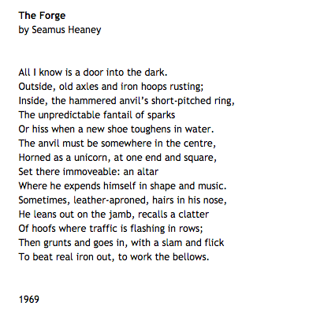

For Michael Earl Craig's newest collection Thin Kimono, Wave Books had Quemadura (aka Jeff Clark) design a cover that is visually stripped with sparse scatterings of muted colors randomly dashed and streaking across it. These minimal markings are countered and anchored by a thin, majuscule, serif typeface, that is at once quite thin in its crossbars, and quite thick in the stem. The aleatoric background contrasts with the deliberate, marked font, and may be a useful way to consider this collection of poetry. For there is here, at least in terms of semantics and content, a concern with the aleatory: many poems deal with the quotidian, thinking into the dailinesses of life; random objects and random events and their relations. But amidst these random occurrences, the dashes and streaks of being, there is, like the typeface, a definitive and palpable observer: a solid, reoccurring voice and identifiable "I". The book works through a number of different forms, primarily an O'Hara-ian-esque I did this and then I did that poetic of the quotidian through a combination of dramatic monologues and lyrical investigations.
There are of course, exceptions: one is the poem "Diana" which we learn later in Notes & Acknowledgements is built from a collage of quotations from "Vida Hursts's 1927 novel Diana (Grosset & Dunlap, New York), with the exception of [the line] 'Stanton took his chocolates and left', which was added by the author" (107). This post-conceptual poem - think a conceptual poem, but with a markedly authorial intervention - with its ?in?significant? intervention could act as a sort of refusal on Craig's part to engage in these different contemporary poetics, opting instead to work more in "traditional" forms. This is not a criticism. But rather I notice in the opening poem, "Do Not Disturb", not quite an aversion to the "avant-garde" or other contemporary formalist experimentation, but rather a disinterest. This poem is entirely italicized and resembles (if anyone else has read it) the prelude of Cormac McCarthy's Suttree in typography, register (an authorial, almost highfalutin narrator), and grammatical mood: both function as an address and readerly invitation. It also reminds me of Seamus Heaney's "The Forge":
in its elevation of the value of discipline, and a preference for a mythopoeic or time-honoured praxis (biographically as well, Craig is a farrier and has probably spent some time beating "real iron out"), as opposed to experimentation of form or self-reflexive linguistic investigation. Craig's opening poem is explicit - "I assure you" - that there is some form of contemporary contribution that would be "wholly unnecessary" (9). This is similar to Heaney's "leans out on the jamb...then grunts and goes in", the whole, yeah there are different ways of doing things, but I'm going to do what I know how, type of mentality. The tone is not so much pretentious as it happily contemptuous. Like both Heaney and McCarthy, although the comparisons are a bit haphazard I admit, not that Craig is very similar or totally unlike either of these writers necessarily, but there is I think, in all three of them, a type of disinterest, or aversion, to perhaps what could only be called the "fashion of the age", the zeitgeist, at least as far as experimentation in form is concerned, subject matter is a totally different concern. Geez it feels hard to make my point here: I'm just trying to say that Craig's formal tendencies are grounded, thorough, and solid, even as it may eschew (slightly) other experimental ones.
Oh yeah, the totally Nietzschean anti-academy poem also has me thinking about this. "Today For Example", is an exemplum poem that is didactic, revealing, and almost allegorical. The poet ponders: "every now and then I wonder if I fucked up with this horseshoeing thing, but then I talk with my friends in academia and, well, I'm okay with my choices" (15). The poem then catalogues mundane occurrences of the day "It was raining the mountains", alongside the work performed with the ostensibly personified horses that are metonymic (perhaps) of the poet's "friends": for example, "Jimmy (unsure about the world, collapses violently when he hears loud noises, likes to cut himself)" (15). Funny, and I haven't touched on Craig's integration of comedy into his poetics yet, but beyond funny, what is the critique or comment about academia or "intellectualism" here? I think there is a line that follows from the same "wholly uneccessary" comment made earlier in that the poet here prefers their alternative in the end to occupy a position of decisive difference, even if they relegate it as perhaps being more "simplistic" or "rural", as the straightforward syntax of the final sentences suggests.